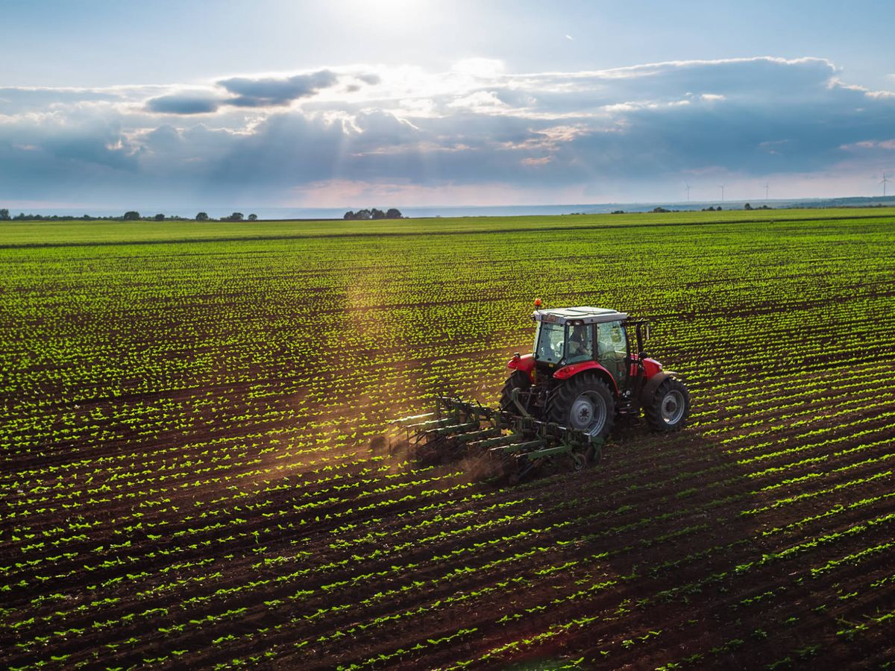

Cereales Gomar S.L
Cereales Gomar S.L., Fundada en el año 1999, es una empresa de carácter familiar, dedicada desde sus orígenes a la comercialización y secado de cereales, aunque hoy en día nos dedicamos también a almacenaje de mercancía, servicio de abonadora, aplicación de fertilizantes, transportes, etc.
Situada en pleno centro de Extremadura, zona estratégica agrícola para regadío, en la que destacan los cultivos de maíz, tomate, brócolis, arroz...
Disponemos de más de 20.000m2 de superficie en nuestras instalaciones repartidas en las poblaciones de Medellín y Santa Amalia.
